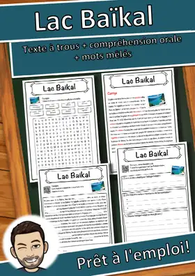
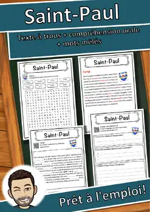
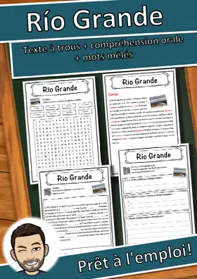
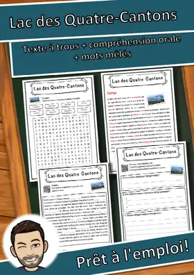
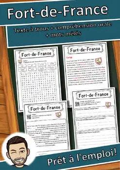
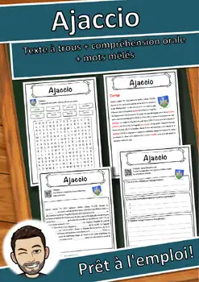

Arrondissement de la Börde - Fiche - texte à trous, compréhension orale et mots mêlés
1,50 €Voir sur eduki
Cette ressource pédagogique vient d'être mise en ligne. L'auteur·e n'a pas encore écrit de description.
Extrait du texte
En plein cœur de l'Allemagne, dans la région de Saxe-Anhalt, se trouve l'arrondissement de la Börde, un territoire où les paysages de plaine s'étendent à perte de vue. Sa ville principale, Haldensleben, en est le centre animé, mais d'autres localités dynamiques y jouent aussi un rôle important. […]
ThèmeGéographie
Type de ressourceFiche de lecture
FormatPDF
Ressources similaires

Lac Baïkal – Fiche CM1-CM2 : texte à trous, compréhension orale et mots mêlés

Saint-Paul – Fiche : texte à trous, compréhension orale et mots mêlés

Río Grande – Fiche : texte à trous, compréhension orale et mots mêlés

Lac des Quatre-Cantons – Fiche : texte à trous, compréhension orale et mots mêlés
Asnières-sur-Seine – Fiche : texte à trous, compréhension orale et mots mêlés

Fort-de-France – Fiche : texte à trous, compréhension orale et mots mêlés
